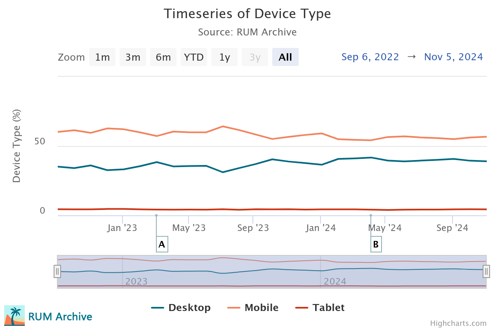
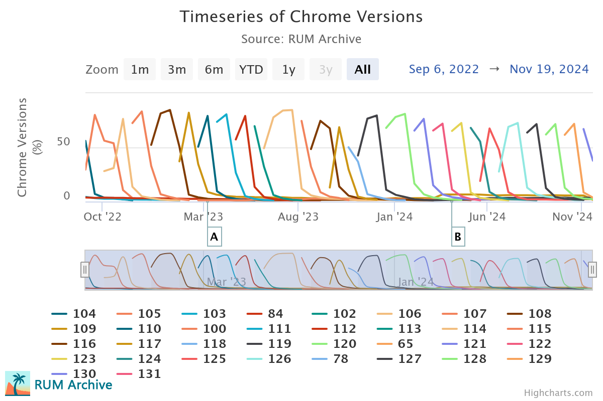

Daily Uploads and a Two Year Review!
By Nic Jansma on
Table of Contents
The RUM Archive was released in December 2022, and we've been releasing new data on a monthly cadence for over two years now.
This month we're announcing an improvement to the data release schedule: RUM Archive data is now being uploaded on a daily basis.
To celebrate, let's review the growth of dataset from when the project was first announced two years ago!
A Two Year Review
We introduced the RUM Archive on December 14, 2022 -- 775 days ago (as of January 28, 2025).
The Page Load dataset itself has monthly data going back to October 1st, 2021 and daily data starting with September 1st, 2022.
Let's review how that data has grown. Here's a snapshot of the Page Load dataset:
- 1.73 TB
- 879 days (daily cadence), 891 unique days (monthly data back to 2022-09)
- 1,131,816,412 rows
In addition, on November 1st, 2023 we announced a new Third-Party Resource Dataset.
Since then, the Resource data has grown alongside the Page Load data:
- 593 GB
- 470 days (daily cadence)
- 527,953,687 rows
All of this data is available for query from the BigQuery dataset.
Having data reach this far back allows us to start seeing some really long-term trends in the data. Here's a chart of device types over those 2+ years, where we can see a slight though unmistakable revival of the desktop in recent months:

Below is one of my favorite charts of Chrome versions over time. It shows the release cadence of new releases, as well as version uptake by visitors pretty clearly:

All of these charts (and more!) are available in RUM Insights.
Daily Uploads
Up to this point, the mPulse team has been uploading all of the data for the previous month within the first few days of the new month. For example, we would upload December 1st through 31st in the first week of January.
Part of the reason for this release cadence was that some of the export / conversion / import process (from the mPulse dataset to the public BigQuery dataset) was manual.
I'm excited to announce that starting December 1, 2024 all mPulse data is being uploaded on a daily cadence.
The data for DAY should be visible in the BigQuery dataset by approximately noon (12pm) GMT on DAY+1.
The automation driving this has been running successfully for a few months, but we'll continue monitoring it. We make no guarantees that it'll be available by noon GMT the following day, but please let us know if you're not seeing the data you expect.
What's Next?
The RUM Archive Team has a lot of ideas for how to improve the dataset as well as the presentation of it on this website.
Here are some of the ideas we're planning:
- Continued improvements to RUM Insights
- A new dimension browser that provides details on the set of dimension values (and how they compare to the full un-aggregated data in mPulse)
We're also still looking for RUM providers or website partners that would want to join the RUM Archive to share their own data. Please connect with us (twitter, mastodon and now bluesky) if you're interested!
Thanks for all of the support!